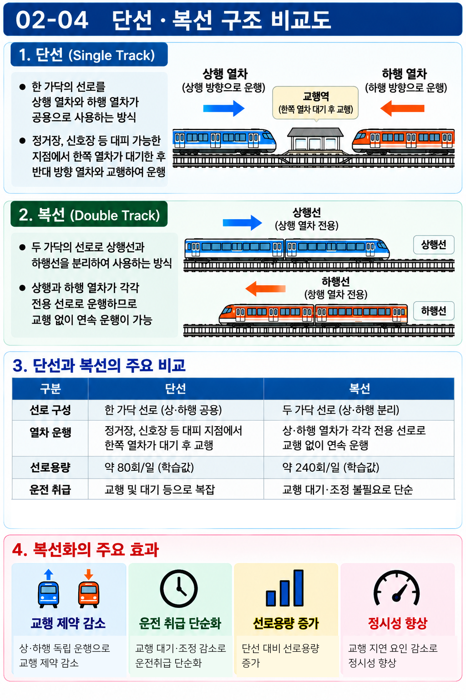
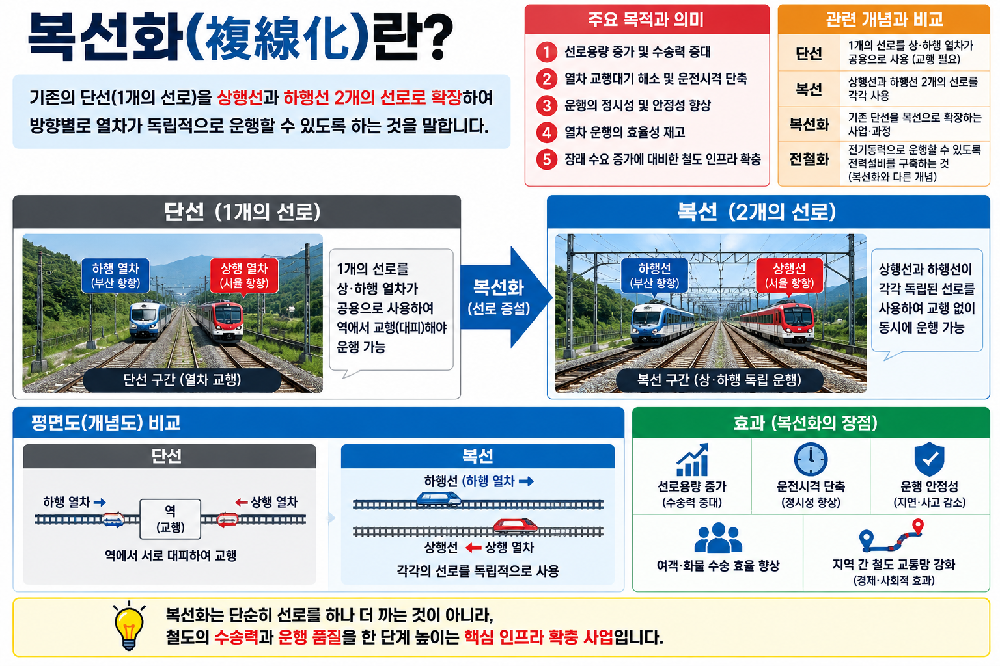

CROSS-REF → UNIT 02-03
복선화는 선로용량 증대 방법 중 하나. 단선 약 80회/일 → 복선 약 240회/일(3배). 선로이용률·포화도 계산식은 UNIT 02-03 참조.
§1. 핵심 용어정의
용어정의 | 복선화(複線化)
한 가닥 선로를 상·하행 열차가 공용하는 단선 선로를 상·하행 방향을 분리한 두 가닥의 선로(복선)로 확장하는 것. 교행 대기 없이 상·하행 열차가 동시에 달릴 수 있어 용량이 크게 늘어난다.
용어정의 | 교행(交行)
단선 선로에서 상행 열차와 하행 열차가 서로 반대 방향으로 지나쳐야 할 때, 한쪽이 대피선에서 기다리는 것. 복선화로 교행 대기가 불필요해진다.
§2. 복선화 효과 (SOURCE 56)

VIS-123 단선·복선 구조 비교도 (SOURCE 56)
| 구분 | 단선 | 복선 |
|---|
| 상·하행 분리 | 한 가닥 공용 (교행 필요) | 상행·하행 독립 운행 |
| 교행 제약 | 있음 (대피선 대기) | 없음 |
| 선로용량 | 약 80회/일 | 약 240회/일 |
| 운전취급 | 복잡 (교행 조정 필요) | 단순화 |
복선화의 주요 효과:
① 교행 제약 감소 — 상·하행이 서로 방해받지 않고 독립 운행
② 운전취급 단순화 — 교행 대기·조정 불필요
③ 수송력(선로용량) 증가 — 단선 대비 약 3배 (80회 → 240회/일)
④ 정시성 향상 — 교행 지연 요인 제거
§3. 주의사항 — 단순화 금지
일반화 금지 사항
X"복선화 시 용량은 항상 정확히 3배이다" → 단순 일반화 주의. SOURCE 기준 단선 약 80, 복선 약 240으로 약 3배이나, 실제는 선형·신호·운행 조건에 따라 달라질 수 있음.
OSOURCE 56: 단선 약 80회/일, 복선 약 240회/일 → 3배 효과 (SOURCE 기준 암기)
§4. 선로 형식 비교
| 항목 | 단선 | 복선 | 비고 |
|---|
| 선로 수 | 1개 | 2개 (상·하 각 1) | — |
| 교행 필요 여부 | 필요 | 불필요 | 복선 우위 |
| 선로용량 | 약 80회/일 | 약 240회/일 | SOURCE 56 기준 |
| 운전취급 복잡도 | 복잡 | 단순 | 복선 우위 |
| 건설비 | 낮음 | 높음 | 단선 우위 |
§5. 핵심암기
암기 공식
복선화 = 한 가닥 공용 단선 → 상·하행 분리 복선으로 전환
효과: 교행제약감소 · 운전취급단순화 · 수송력증가(≈3배)
단선 80회/일 → 복선 240회/일 (SOURCE 56 기준)
"항상 정확히 3배" 단순 일반화 금지
§6. 시험포인트
핵심 ①
복선화 효과 3가지: 교행 제약 감소, 운전취급 단순화, 선로용량 증가.
핵심 ②
단선 약 80회/일 → 복선 약 240회/일 (약 3배). SOURCE 56 기준.
함정 ①
복선화 시 선로용량이 반드시 3배라고 단정하는 선지 → "약 3배" 수준의 표현이 정확.

VIS-106 복선화 개념도 (SOURCE 02)
VIS-123 단선·복선 구조비교도 FINAL (SOURCE 02)